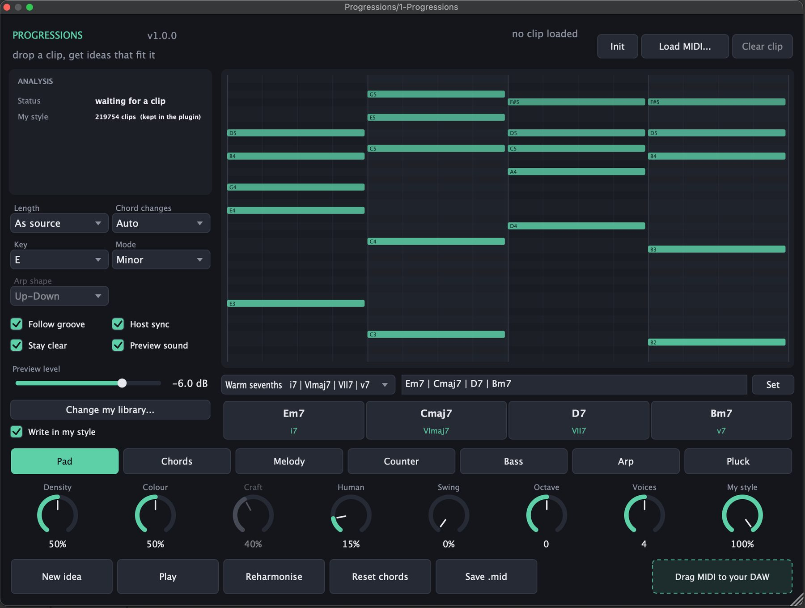

MIDI idea generator · VST3 + Standalone Gerador de ideias MIDI · VST3 + Standalone
Progressions
Drop in a MIDI clip, type a progression, or pick a preset. Progressions works out the harmony underneath and writes the parts that go over it — pads, chords, melodies, counter melodies, basslines, arps and plucks — and you drag the result straight onto the timeline. Solte um clipe MIDI, digite uma progressão ou escolha um preset. O Progressions descobre a harmonia por trás e escreve as partes que vão por cima — pads, acordes, melodias, contracantos, baixos, arpejos e plucks — e você arrasta o resultado direto para a timeline.
- Detects key, chords and rhythm from any clip — bass, pad, lead or arp. Detecta tonalidade, acordes e ritmo de qualquer clipe — baixo, pad, lead ou arpejo.
- 36 progressions across 12 genres, or type your own in chords or roman numerals. 36 progressões em 12 gêneros, ou digite a sua em cifras ou graus.
- Point it at your MIDI collection and it learns how you write. Aponte para a sua coleção de MIDIs e ele aprende como você escreve.
- Reharmonise in one click; the same seed always gives the same idea back. Reharmoniza com um clique; a mesma semente sempre devolve a mesma ideia.
